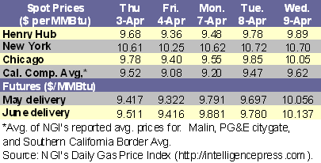
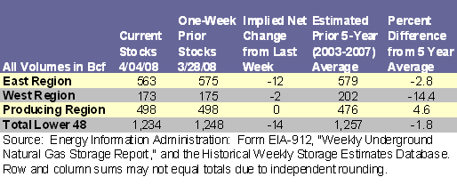

{kind=link}
{kind=link}
Natural Gas
Natural Gas Weekly Update Archive
for week ending April 9, 2008 | Release Date: April 10, 2008
Previous Issues
Overview (Wednesday, April 2, to Wednesday, April 9)
Released: April 10, 2008
Next release: April 17, 2008
·
Since Wednesday, April 2, natural gas spot prices increased
at most markets in the Lower 48 States.Â
Prices at the Henry Hub rose 30 cents per million Btu (MMBtu), or about
3 percent, to $9.89 per MMBtu.Â
·
At the New York Mercantile Exchange (NYMEX), the futures
contract for May delivery at the Henry Hub settled yesterday (April 9) at
$10.056 per MMBtu, rising nearly 22 cents or about 2 percent since Wednesday,
April 2.Â
·
Natural gas in storage was 1,234 billion cubic feet (Bcf) as
of April 4, which is nearly 2 percent below the 5-year average (2003-2007),
following an implied net withdrawal of 14 Bcf.Â
·
The spot price for West Texas Intermediate (WTI) crude oil
increased $6.06 per barrel on the week to $110.89 per barrel or $19.119 per
MMBtu.
Natural gas spot prices decreased on the week
(Wednesday-Wednesday) at most market locations, with intraweek spot market
trading characterized by price decreases through Friday, April 4, and increases
beginning on Monday, April 7. The softness in spot prices late last week
likely can be attributed to moderating temperatures and softening industrial demand
for natural gas over the weekend. While
temperatures were relatively mild outside the Upper Rockies, Upper Plains, and
parts of the Midwest, other demand/supply factors contributed to the price
rally since Monday, April 7. Key demand
factors contributing to the price increases included rising crude oil prices,
the resumption of industrial load, and injection demand for natural gas. Key supply factors included a major
production outage at the Independence Hub in the Gulf of Mexico, and a Colorado
State University hurricane report that projects an above-average 2008 hurricane
season. Price increases since Monday,
April 7, more than offset the declines made in trading heading into last
weekend.Â
On a regional basis, prices rose in all regions outside
Florida by about 12 to 38 cents per MMBtu, or about 2 to 4 percent, while
prices fell in the Florida region by 15 cents per MMBtu, or 1 percent since
Wednesday, April 2. The largest price increases primarily occurred in the
producing areas of South Texas, East Texas, and Louisiana, and in the
Midcontinent and Midwest regions where heating load remains significant. While prices increased at most market
locations outside Florida by more than 12 cents per MMBtu since last Wednesday,
April 2, several markets in the Northeast region posted declines, most notably
at the Algonquin citygate, which serves the New England region, and at the New
York citygate, falling 4 and 3 cents per MMBtu, respectively. Despite these declines, prices increased
nearly 15 cents per MMBtu on average in the Northeast region.
Enterprise Products Partners L.P. announced on Wednesday, April 9, that production at the Independence Hub natural gas platform at Mississippi Canyon Block 920 in the deepwater Gulf of Mexico was shut-in as a result of a leak on the Independence Trail export pipeline. The Independence Hub can process approximately 1 Bcf of natural gas capacity per day, which is about 10 percent of the natural gas produced in the Gulf of Mexico. A loss of this magnitude will contribute upward pressure on natural gas prices. The shutin is expected to last between 1 and 4 weeks while the necessary repairs are completed. (For more details, please see the Natural Gas Transportation Update in a later section of this report.) Â

At the NYMEX, the price of the contract for May 2008
delivery increased 22 cents per MMBtu since last Wednesday, April 2, while
futures prices for natural gas delivery through March 2009 posted similar
increases, and the contract for April 2009 delivery increased about 7 cents per
MMBtu. Prices for the 12-month futures strip (May
2008 through April 2009) averaged $10.438 per MMBtu as of Wednesday, April 9,
climbing about 21 cents per MMBtu, or about 2 percent, since last Wednesday,
April 2. Contract prices for delivery in
successive months in the 12-month strip exhibited a pattern of increasing
prices, peaking with the January 2009 contract at $11.115 per MMBtu. Only the April 2009 contract traded at a
discount relative to the May 2008 contract.  Â
On Wednesday, April 9, the 12-month futures strip (May 2008
though April 2009) traded at a premium of 55 cents per MMBtu relative to the
Henry Hub spot price. Contracts for
delivery next winter (December 2008 through March 2009) traded at an average
premium of $1.13 per MMBtu relative to the spot price. Price differentials of this magnitude provide
suppliers significant incentives to inject natural gas into storage.
Recent Natural Gas Market Data

Working gas in storage decreased to 1,234 Bcf as of Friday, April 4, according to EIA’s Weekly Natural Gas Storage Report (see Storage Figure). The net withdrawal from working gas storage of 14 Bcf significantly contrasts with the 5-year average net injection of 15 Bcf and last year’s net injection of 33 Bcf for the same report week. These differences likely reflected the heating demand for natural gas as heating degree-days in the Lower 48 States were about 7 percent above normal levels during the report week, and almost 62 percent above the level reported for the same week last year, according to the National Weather Service’s degree-day data (see Temperature Maps and Data).  All Census Divisions in the Lower 48 States posted heating degree-days well above last year’s levels, except for the Middle Atlantic and Mountain Census Divisions where heating degree-days were about 2 percent below normal in both regions for the same report week. In the South Atlantic Census Division, heating degree-days were about 31 percent below normal levels; however, cooling degree-days in the region significantly exceed normal levels.
{kind=link}
{kind=link}
At 1,234 Bcf, working gas in storage is at the lowest level since April 30, 2004, when working gas in storage was 1,227 Bcf. Nevertheless, working gas in storage as of April 4 was significantly above the 1,034 Bcf level reported during the same report week in 2004. As of April 4, working gas stocks were 351 Bcf below the last year’s level and 23 Bcf below the 5-year (2003-2007) average. Â

Â
Other Market Trends:
Overview of
the 2007-2008 Heating Season. The
2007-2008 heating season (November through March) was marked by generally
higher natural gas spot and futures prices compared with the 2006-2007 heating
season. After beginning the heating
season at a record level, underground natural gas storage levels declined
relative to last years levels as the weeks progressed and by the end of the
heating season fell below the 5-year (2003-2007) average. Temperatures during
much of the heating season were warmer than normal, but colder-than-normal
temperatures late in the heating season led to net storage withdrawals that
were significantly higher than average. The relative decline in storage levels,
along with lower volumes of liquefied natural gas (LNG) imports and the record
high price of crude oil, exerted upward pressure on natural gas prices. LNG
imports totaled about 76 Bcf during the first 3 months of 2008, which is less
than half of the nearly 177 Bcf imported during the same period last year. The
decrease in LNG imports this year is most likely the result of higher LNG
prices abroad, which provided incentives to ship cargoes to Asia and Europe.
The
average spot price at the Henry Hub for the 2007-2008 heating season was $8.05
per MMBtu, which is 13 percent higher than the previous heating season’s
average price of $7.15 per MMBtu. Despite being higher during the
2007-2008 heating season, the spot price at the Henry Hub was still
significantly lower than during the 2005-2006 heating season, when markets were
recovering from an active Atlantic hurricane season. During the past
(2007-2008) heating season, the Henry Hub spot price peaked at $9.86 per MMBtu
on the final day of the season (March 31). Prices in other areas of the Lower
48 States also steadily increased during the heating season, particularly
during the months of February and March. For example, prices in the Midwest
increased to an average of $8.84 and $9.73 per MMBtu in February and March,
respectively. These increases followed price run-ups of $0.13 and $0.78 per
MMBtu in December and January, respectively. In the Rocky Mountains, however,
the expansion of available pipeline capacity to transport natural gas out of
some of its production areas led to more significant price increases. The
opening of the Rockies Express pipeline resolved much of the transportation
congestion that had previously depressed prices in the region. The regional average price in the Rockies was
$8.41 per MMBtu in March, nearly double its November 2007 level of $4.82 per
MMBtu.
Temperatures
in the Lower 48 States were warmer than normal during the first 3
(November-January) heating season months, albeit by very small percentages. Temperatures
in these 3 months were between 1.6 and 3.9 percent warmer than normal, as
measured by heating degree-days (HDD). In February and March, however,
temperatures were 2.2 and 1.9 percent colder than normal, respectively. Despite
the relatively small deviations from normal, temperatures during the 2007-2008
heating season were significantly colder than for the same months in the prior
year except for February. Temperatures
in remaining months exceeded the prior year’s levels by between 5.4 and 21.5 percent.
Spot
price increases in the first 2 months of the 2007-2008 heating season were
fairly limited as a result of the moderate temperatures and the abundant volume
of natural gas in storage. The heating season started with a record 3,567 Bcf
of natural gas in storage, which was 7.2 percent higher than the 5-year average
and 3.3 percent higher than the volume at the onset of the 2006-2007 heating
season. However, working gas in storage fell below the previous year’s level by
mid-December and remained there for the rest of the heating season, eventually
falling below the 5-year average at the end of March. The relatively low levels
of natural gas remaining in underground storage as of March 31 are the result
of higher-than-average net withdrawals.Â
Monthly net withdrawals exceeded the 5-year average net withdrawals in
each of the heating season months, resulting in the largest cumulative net
drawdown of any heating season except for that of 2002-2003.
EIA
Issues Its Short-Term Energy and Summer Fuels Outlook. The Energy Information Administration (EIA) released
the latest Short-Term Energy and Summer Fuels Outlook, on April 8,
2008. The report shows that the natural
gas price at the Henry Hub averaged $7.17 per thousand cubic feet (Mcf) in 2007
and is expected to reach $8.59 in 2008, and $8.32 in 2009. Higher prices for this year and next are the
result of continued strong demand, high oil prices, and the need to inject more
natural gas into storage this year than last.Â
During the second and third quarters of 2008, the Henry Hub price is
expected to average about $8.44 per Mcf, which represents a 19.8-percent
increase from the prior year average of $7.05 per Mcf. Total U.S. dry natural gas production is
projected to increase by 2.9 percent in 2008 and 0.2 percent in 2009. In 2008, production is expected to be driven
by the development of deepwater supplies as well as production from the Lower
48. However, imports of liquefied
natural gas (LNG) are expected to decrease to 680 billion cubic feet (Bcf) in
2008, which represents a 12-percent decline from the record volume in
2007. The decline in U.S. natural gas
imports is the result of higher prices in Asia and Western Europe, which compete
with the United States for LNG supplies.Â
Natural gas consumption is expected to rise by 1.0 percent in 2008 and
by 0.8 percent in 2009. The assumed
return to normal temperatures in the remainder of the year is expected to lead
to limited growth in residential and commercial demand in 2008, while economic
conditions are expected to limit industrial sector growth for the year.
In 2009, consumption is projected to decrease slightly in the residential and
commercial sectors, with a small increase expected in the industrial
sector. Milder summer temperatures are
expected to leave natural gas consumption for electricity generation unchanged
in 2008, after an increase of more than 10 percent in 2007. Consumption
growth of 2.9 percent is expected in the electric power sector in 2009.
EIA Releases Report on Federal Energy Subsidies and
Support. According to EIA’s report
titled Federal Financial Interventions and Subsidies in Energy Markets 2007,
Federal energy subsidies and support to all forms of energy doubled between
1999 and 2007, reaching $16.6 billion for fiscal year 2007. The last EIA report
on subsidies, completed in 2000, estimated that subsidies totaled $8.2 billion
(in 2007 dollars). Tax expenditures, which are one of four types of subsidies
analyzed in the report, have more than tripled since 1999, increasing from $3.2
billion to more than $10.4 billion in 2007. The report, which was completed at
the request of Senator Lamar Alexander, shows that electricity subsidies and
support per megawatthour varied widely by fuel in 2007. Subsidies for
renewables increased from 17 percent of total subsidies and support in 1999 to
29 percent in 2007. Natural gas and petroleum-related subsidies declined as a
share of total subsidies primarily as a result of the expiration of the
Alternative Fuels Production Tax Credit for the production of unconventional
natural gas in 1999, whereas refined coal was the principal beneficiary of this
tax expenditure in 2007. Coal-related subsidies, excluding refined coal,
experienced a modest decline as a share of total subsidies from 7 percent in
1999 to 6 percent in 2007. Overall, renewable fuels as well as coal-based
synfuels that were eligible for the alternative fuels tax credit, received the
highest subsidies per unit of generation, ranging between $23 and $30 per
megawatthour. At the same time, the smallest subsidies on a per-unit basis were
for coal ($0.44), natural gas and petroleum liquids ($0.25), and municipal
solid waste ($0.13) per megawatthour of generation.
New Forecast Predicts an Active 2008 Hurricane
Season. A new report published by
the Colorado State University (CSU) Department of Atmospheric Science predicts
a significantly more active hurricane season for 2008 than the average
hurricane activity experienced between 1950 and 2000. The report used analog
predictors and a new extended-range early-April statistical prediction scheme
based on 58 years of data. Based on this analysis, the report states that the
current sea surface temperature patterns in the Atlantic Ocean are typically
observed before very active seasons, concluding that the probability of a major
hurricane landfall in the United States is about 135 percent of the long-period
average. At the same time, Atlantic basin net tropical cyclone activity in 2008
is expected to be about 160 percent of the long-term average, while the
probability of a Category 3 hurricane making landfall on the U.S. coastline is
69 percent for 2008. The CSU study predicts that there will be 8 hurricanes in
2008, compared with the average of 5.9, as well as 15 named storms, compared
with the average of 9.6. Furthermore, 80 named-storm days are predicted for the
season (compared with the average of 49.1) and 40 hurricane days (compared with
24.5).
Natural Gas Transportation Update:
· Florida Gas Transmission Company (FGT) announced that
as of April 4, maintenance continued at Compressor Station Number 6, which
includes all three units, and was expected to be completed later in the
evening. During the work, FGT was
expected to schedule up to approximately 150,000 MMBtu per day through
Compressor Station Number 6. Normally, FGT schedules up to 300,000 MMBtu per
day. FGT also announced that as of April 10 it was performing maintenance at
Compressor Station Number 3, which requires both units to be off-line. The outage is expected to last until April
26. During the work, FGT is expected to
schedule up to approximately 150,000 MMBtu per day through Compressor Station
Number 3. Normally, FGT schedules up to 230,000 MMBtu per day.
· California Gas Transmission Company issued a
customer-specific operational flow order (OFO) for Wednesday, April 9, and a
systemwide OFO for April 10, because of low inventory. For both days, the tolerance level was set at
5 percent. Both of the issued OFOs are
stage 2 OFOs, with the penalties set at $1.00 per decatherm.
· Enterprise Product Partners LP reported that the
Independence Trail pipeline was shut in on April 9 as a result of a problem to
the pipeline’s flex joint that connects the Independence Hub platform to the
offtake pipeline. According to the company, the repairs could take from 1 to 4
weeks, but the extent of the damage needs to be assessed by divers before repairs
can commence. The joint is located in only 85 feet of water, so the company
does not consider the outage a significant problem in resuming transportation.
However, since Independence Trail pipeline is the only pipeline that transports
natural gas from Independence Hub, a longer-term outage could affect natural
gas downstream markets. The Independence Hub is located in approximately 8,000
water depth and produces about 850 million cubic feet of gas per day,
accounting for about 12 percent of total regional production.